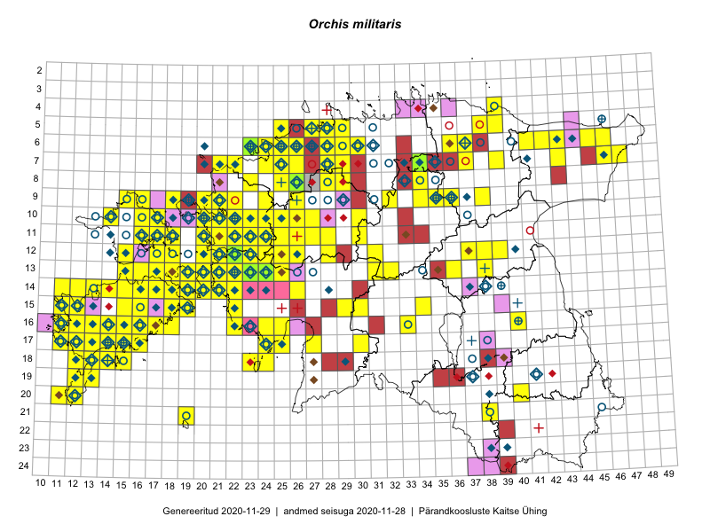

Orchis militaris
Uuendatud: 2016-12-02
Kaardile koondatud taksonid: Orchis militaris L.

Kaart põhineb 490 kirjel, neist vaatlusi 489 ja eksemplare 1. Taksonit on leitud 129 ruudust.
Kuvatud viited 20 esimesele andmebaasikirjele, ülejäänud PlutoFis
- Tiit Hallikma, Toomas Kukk, Indrek Tammekänd: 2015-06-09: 12-28: ala
- Peedu Saar, Liina Oja: 2015-05-21: 16-24: ala
- Peedu Saar, Liina Oja: 2015-05-21: 16-24: GPS punkt
- Peedu Saar, Toomas Kukk: 2015-05-28: 11-17: ala
- Peedu Saar, Toomas Kukk: 2015-05-27: 09-15: ala
- Toomas Kukk, Peedu Saar: 2015-08-05: 20-11: ala
- Toomas Kukk, Peedu Saar: 2015-08-05: 17-14: GPS punkt
- Toomas Kukk, Peedu Saar: 2015-08-05: 17-14: GPS punkt
- Toomas Kukk, Peedu Saar, Kersti Tambets, Sten Mander, Janika Sammasto: 2015-08-05: 17-14: ala
- Toomas Kukk, Peedu Saar, Kersti Tambets, Sten Mander, Janika Sammasto: 2015-08-06: 20-11: GPS punkt
- Toomas Kukk, Eerik Leibak: 2015-08-10: 13-15: GPS punkt
- Toomas Kukk, Eerik Leibak: 2015-08-10: 13-15: ala
- Tiit Hallikma, Indrek Tammekänd, Toomas Kukk: 2015-06-09: 12-28: GPS punkt
- Peedu Saar, Toomas Kukk: 2015-05-26: 10-16: ala
- Peedu Saar, Toomas Kukk: 2015-05-26: 10-17: ala
- Peedu Saar, S. Laherand: 2015-05-30: 06-42: GPS punkt
- Peedu Saar, S. Laherand: 2015-05-30: 06-42: GPS punkt
- Peedu Saar, S. Laherand: 2015-05-30: 06-42: GPS punkt
- Peedu Saar, S. Laherand: 2015-05-30: 06-42: GPS punkt
- Peedu Saar, Liina Oja: 2015-07-23: 07-46: GPS punkt